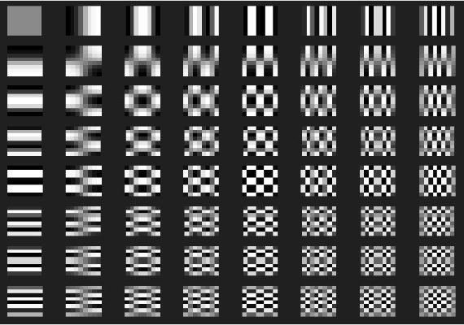
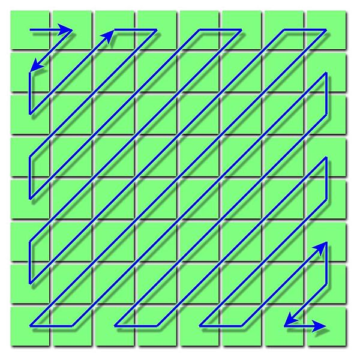

Topic
The topic I will cover in this seminar is the JPEG method, an algorithm for compressing digital still images. File formats for such images include JPG and JPEG.
Theoretical basics
The idea of data compression is to reduce digital data so that the memory required for it is as small as possible, so that space is saved or the transmission time is reduced.
In the field of data compression, we now distinguish between lossy and lossless compression. As the name already suggests, parts of the data signal are omitted in the case of lossy compression, since it may be irrelevant for the specific area of application. The special thing about lossless data compression is that the signal is 100% restored after encoding and decoding.
There is also fractal transmission, which does not find too many areas of application in everyday life, but which can become established over time. To do this, the data is encoded into certain formulas, which then take up less storage space, and are then solved during decoding.
JPEG compression is probably the most popular example of a lossy data compression technique. The JPEG standard, which was developed by the Joint Photographic Experts Group, describes a method for compressing image files. The body consists of the cooperation of ITU, IEC and ISO, which have already set many standards.
The purpose of the JPEG method as a lossy data compression method is to ignore image information that humans cannot see well anyway. Humans are very good at recognizing contrasts and differences in brightness, which is why they are almost always saved, but color differences are more difficult for us to recognize, which is why they are the first thing that is left out during compression.
Procedure Description
JPEG compression takes a digital image as input and outputs a new, compressed digital image after the following steps.
Step 1: Color Model Conversion
Since the colors are stored as RGB values in typical computer images, but as humans (as already mentioned above) we recognize the differences in brightness much more, we have to separate the brightness information and the color information for the compression. The color model used in JPEG is YCbCr, which stores lightness as a single value (Y) and can be converted to from the RGB model very easily, although not exactly.

Source: https://en.wikipedia.org/wiki/JPEG#color model conversion

Source: Robert Stocker
The resolution of the Cb and Cr channels is reduced here depending on the process in order to save even more space, but this does not always have to happen.
Step 2: Blocking and Discrete Cosine Transform (DCT)
Now we transform our three obtained components Y, Cb and Cr. The process is analog for everyone, so I'll use the brightness range Y as an example.
The entire image is divided into an 8x8 matrix of blocks, from which each block then comes to a set of 64 values using the discrete cosine transform. Each of these values is the strength of a frequency component (see below), which goes from weak to strong as you go further to the right and/or down in the frequency matrix.

Source: Robert Stocker
The 64 values obtained here as a result are also a matrix representing how often each frequency component is "used".
Step 3: Quantization
Now it's time to quantize. Quantization is the source of most of your loss with this compression.
In fact, the result matrix of each block from step 2 is divided by the quantization matrix. This has larger values in the lower right where (as we know from step 2) the higher frequency components lie, because as humans we are more attentive to lower frequency information.

Source: Robert Stocker
In the demonstration kit, you can edit this matrix either manually or using a quality slider, which then stretches or compresses this matrix.
Step 4: Reordering and entropy encoding
The result matrix of the quantization is now sorted according to a zigzag shape and saved as an array. This form is used because the zeros in the result matrix are often at the bottom right and later we use run-length encoding to further compress the result.

Source: Wikipedia
{kind=link}
The final step is to use a lossless entropy compression method, often Huffman compression. After doing this for all blocks, the compression is done and we have a JPEG encoded image.
To then decode the resulting image, these steps are reversed. These consist of entropy decoding, resorting, requantization, inverse DCT, color model conversion from YCbCr to RGB (or other color models).
Area of application
JPEG compression is clearly used in digital image processing.
For one thing, every relevant operating system supports JPEG image files and, along with PNG, they are the most popular format for sending or storing images. And considering that this format was developed in 1992, that's pretty amazing in our world of fast-paced technology.
Quality assessment of the procedure
Of course, JPEG compression isn't perfect, like any lossy method, but there's a reason it's still widely used today, and that's because it saves a lot of space, while the perceived quality of the image still remains very good. And while storage isn't that expensive now, people are storing more and more data, which is why a compression method like JPEG is still relevant.